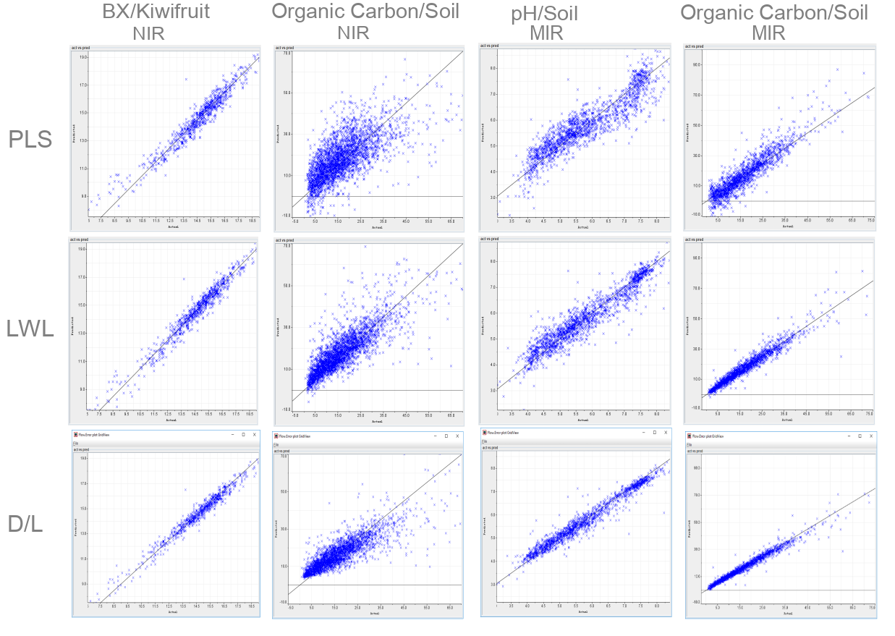

Expertise
Spectral data analysis
Over the last fifteen years, we have developed and deployed software that takes advantage of machine learning models to predict properties of plant and soil samples, using spectra from various instruments: near-infrared (NIR), mid-infrared (MIR), laser-incuded breakdown spectroscopy (LIBS) and X-ray fluorescence (XRF).
For decades, many organizations have relied on global methods like partial least squares regression(PLS) for their modeling. However, global methods do not perform well with complex data derived from, for instance, soil samples. From the start, our software took advantage of locally weighted learning, achieving much better results.
In recent years, we have been able to push the boundaries even further, by adopting advanced modeling techniques using deep learning.
Image processing
With the advent of frameworks like Tensorflow and PyTorch, deep learning techniques became more accessible. Many cutting edge algorithms and libraries have complex dependencies that not only interfer with each other, but also change frequently. These libraries are often geared towards academic experimentation and not production-ready. By employing containerization offered by Docker and custom extensions, we are able to deploy these framework in production environments (for training and inference).
We have experience in the following areas:
image classification
object detection
image segmentation